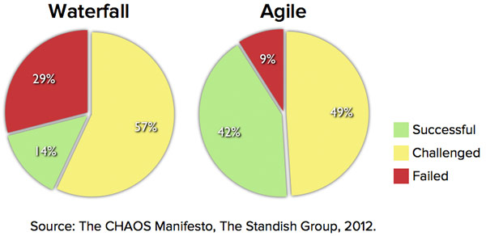
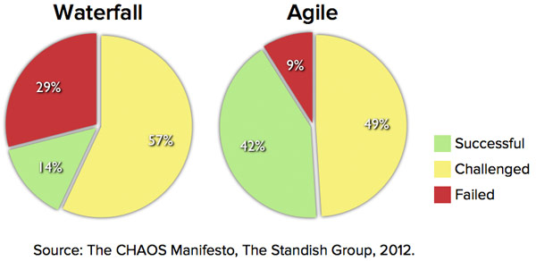

Evolution of a Management Schedules Fable Evolution of a Management Schedules Fable Author: Joel Fleiss Date: Dec 01, 2014 Management Fable Akila was a very intelligent, resourceful man who many of the elite Egyptian society used for major construction projects. He was often contracted to build and modernize the royalty’s castles. Several affluent business men used his expertise to construct offices for their businesses. He had been conducting construction projects for over two decades before the Egyptian pyramids were built 4,500 years ago. One day the Pharaoh came to Akila and said “I want you and your team, Akila, to build a monument to my father, sons and me.” In the next five minutes the Pharaoh described what he expected. Being a clever soul, Akila mentioned that this would be an extremely ambitious effort. It would take multiple decades and require significant resources. The Pharaoh then asked Akila to think about it for a couple of months and create a plan as to how it could be accomplished, how long he would estimate each part of the “pyramid’s” construction would take and present sketches of what it would look like when finished. Akila had already built numerous beautiful castles and several buildings. He began pondering what was needed and how this massive effort could be accomplished. He wisely thought that to estimate this mammoth effort he would need support from from his key engineers and managers. He knew he needed a plan that considered all the tasks required to accomplish the Pharaoh’s vision. The challenge was there were no computers, no scheduling tools and to construct such a monumental entity would be extremely diffiuclt. Akila gathered his engineering team and said, “We need to create a form that we can use to describe each major task on our project of building this monument as a tribute to our great Pharaoh.” On this design form he told his team “we will list the major tasks needed, then put them in a logical order and estimate how long each task would take and what resources would be required for each task. He told his team they would work together to specify what they jointly felt were the tasks (brainstorming) for the next 3 weeks. After listing what they felt were all the tasks he said to his troops, each of you will be responsible for providing detailed information for each task that I have assigned to you based on your previous expertise. The information would include for each task at a minimum: Identification Description Type of Laborers and How Many Required Estimated Effort Estimated Duration Dependencies Anticipated Problems (Risks) Material Needed Tools Needed Supporting Documentation Maintenance Considerations Drawings After his team completed the initial specification of all the tasks, Akila told the Pharaoh that he estimated that he would need approximately 3,000 dedicated workers and the project would take nearly two and a half decades. He was very nervous. No one had ever undertaken such an ambitious effort for such a long period. As you can imagine the plans were enormous. Pages and pages of the thousands of thousands of tasks were documented. The plans not only included the building of the pyramid but also the development of a set of tools for moving the blocks of granite, creating pillars along with building homes and facilities for the working team. The Pyramid project took almost three decades instead of the estimated two and a half. Costs were difficult to measure, since the compensation of the majority of workers were minimal. Akila, who was 42 years old when the project started, died a couple of years prior to its completion as did the Pharaoh a year earlier. His oldest son, Akila Jr. completed the effort and the Pharaoh’s son was delighted with the results. His father and grandfather were moved to the resulting pyramid and all Egyptians marveled at the creation. Having been trained by his father and being every bit as industrious, bright and ambitious, Akila Jr. met with his key engineers and discussed the project’s results (lessons learned) so there next effort might be even better. managers for the next 4,400 years wished they had followed a similar process with only minor deviations from what Akila did. In fact, Akila’s processes, management and leadership style was far superior to a significant percentage of how most organizations conduct their projects today. Of course, without computers keeping the task attributes up-to-date, bookkeeping was a nightmare. Even with the advent of computers followed shortly with the advent of software scheduling tools, only a few sophisticated organizations for the most part have improved on this process. Yet projects too often are delivered late, cost more than originally estimated and often do not fulfill all the requirements. Akila was a fantastic manager as he had to be to successfully lead such an ambitious project. If Akila was real, the PMBOK (Management Body of Knowledge) would have dedicated multiple chapters to his successful management of such a complex project. His ability to create a process that divided a complex problem into solvable parts and subparts provided mankind a methodology to implement future project in an orderly, organized fashion. Modern scheduling tools such as Microsoft Project, Oracle Primavera, CA Clarity, OP3IT, Inc OP3IT and numerous others can trace their origin to Joseph Priestley who lived from 1733 to 1804. Mr. Priestley is given credit as the originator of the “bar chart” which he called the “Chart of Biography.” The “Chart of Biography” plotted nearly 2,000 famous lifelines on a time-scaled chart. The length of the line represented the duration of time. William Playfair in his “Commercial and Political Atlas” of 1786 developed a set of statistical charts including the line, bar (histogram) and pie charts. The Atlas contained 43 time-series plots and a histogram. The predecessor to the Gantt chart was created in the mid-1890s by a Polish engineer, Karol Admiecki. Mr. Admiecki ran a steelworks in southern Poland and had become interested in improving management processes. The time phasing and duration of tasks were shown by a “vertical sliding tab” (like a bar in a bar chart) and tabulated successors and predecessors. Thus it really was a predecessor to the PERT and CPM systems developed some 60 years later. Fifteen years later an American engineer and management consultant, Henry Gantt, devised his own version of the chart and it was this chart which became widely known in western countries. Because of the popularity of the chart, the charts were named Gantt charts in his honor. The initial Gantt charts were prepared by hand, which was a very tedious effort. Each time a changed occurred to the project, the chart needed to be redrawn, and since projects of any complexity continuously change, their usefulness was minimized. Today Gantt charts are used for providing a pictorial view of a project’s schedule with software tools able to re-draw the charts in a few minutes instead of the days it took prior to computers. Today’s Gantt chats not only include a timeline for each scheduled task, usually represented by a rectangle, but also percentage complete, resources used along with dependencies and successors. Some also allow users to access all of the task’s attributes with a simple click of the mouse. James Kelley Jr. and Morgan Walker during 1956 to 1957 while working at DuPont developed the algorithms that were later known as “Activity-on-Arrow” and “Arrow Diagramming Method” (ADM) scheduling methodology. In March of 1959 they published a paper on critical path scheduling. The advent of scheduling tools combined with the “micro” computer enabled managers to create schedules for large projects without a cadre of professional schedulers using expensive main frames trying to accomplish what a single manager could accomplish with a PC in the 1980s. Dr. John Fondahl in 1961 developed the Precedence methodology (PDM). In Europe at nearly the same time the Meta Potential Method (MPM) was developed. Both of these methods attempted to improve the use of the data generated by the schedulers. In 1969 Dr. Martin Barnet of the United Kingdom described the “Iron Triangle” of cost, time and output. During the last few years it has been changed to the triple constraint of cost, schedule and scope. With superior tools from Microsoft, Oracle, Computer Automation, IBM and many others, why are so many projects failing? We often hear projects of varying size costing factors more than their original estimates, delivered well beyond the estimated finish dates or not fulfilling all the original requirements. What is it that causes organizations not to seek better tools with well over half of their project portfolio investment wasted? If Akila were alive today he would have probably investigated the major causes of project failure. Determine what tools are need to eradicate the majority of these failures. Had his cadre of engineers create a tool that solved the majority of these problems. This is exactly what OP3IT software has done over the past seven years. OP3IT, Inc has created a product, OP3IT (Enterprise Project Portfolio Optimized Resource Allocation) that solves the majority of the critical project portfolio challenges. OP3IT, Inc has just completed its initial testing of OP3IT and is looking for a few forward thinking organizations that are willing to use OP3IT to improve their bottom line. About the Author Joel Fleiss CEO, OP3IT, Inc, Inc. Joel, a multi-decade manager Professional (PMP), will help you understand the historical perspective and importance in all aspects of Project Portfolio Management. Subscribe to learn the importance of: - Project Selection - Requirements - Schedules, WBS and Gantt - Various methodologies and how they have progressed over the years - Resource Allocation, Modeling and Much More! Subscribe to our Newsletter *
An Executive Fable About Management An Executive Fable About Management Author: Joel Fleiss Date: Jan 05, 2015 INTRODUCTION When Veronica missed that easy overhead on match point in the third set, her tennis partner said, "where is your focus? You hardly ever miss an easy overhead, especially in crucial situations." Veronica realized that her mind had been elsewhere, where usually her focus was one of her greatest assets. Veronica responded to her best friend and partner, "Marilyn, I've just been under a lot of stress at work, and almost backed out of playing in the tournament this weekend. I apologize for my poor performance. I'll be better next tournament. Veronica wondered if it was a wise decision she made six months ago to leave her old job as the Vice President of Marketing and Sales at FunMaker. FunMaker created and marketed application games on cell phones and electronic devices for young children. FunMaker was dominating the market within three years after their start. They had spun off from Sony eight years ago, where Veronica had started as a software engineer, became a manager, moved to marketing support, than sales and finally to the Executive Vice President of Marketing and Sales after six years of 60-70 hour weeks. Now, at her new company, GoodTimes, where she is the CEO, the actual company that started the children's electronic game industry fifteen years ago, her new organization was in a downhill spiral. For the last three years sales were declining by over ten percent annually, while the industries sales were rising annually by eight percent. Where they were once number one in sales, they were now the fourth leading organization in terms of sales in the children's electronic game industry. Veronica was hired to stop this downward trend four months ago. The industry had changed from introducing a new application every three-six months ten years ago to where competitors were now introducing new applications on a weekly basis. Instead of being the only company in the industry fifteen years ago, there were now hundreds of companies competing in the market space with four companies representing over 90% of the market. Prior to her joining, GoodTimes had transitioned into introducing new applications every two months about six months prior to her working at GoodTimes. Veronica had believed the problem lied in the marketing and sales department. During the first three months she interviewed each of the senior marketing staff members, eleven in all, and replaced four of them with former colleagues who Veronica had worked with and knew would do a far better job than those she replaced. That was a month ago and she was worrying about how long she would have to make things better. She knew she needed a plan to improve GoodTimes share of the market. The market analysis from her staff said that their electronic game buyers, parents who listened to their young children, were smitten with new, dazzling products, whether games, fairy tales, adventures or educational. It seemed that an application's life cycle was at best four months. Although GoodTimes products were often rated technically in the top two by a monthly periodical about the electronic gaming industry GoodTimes sales and market share did not reflect their rating. They were turning out fewer products than their key competitors. They also didn't seem to be as in-tune to the latest youthful fads, which seems to drive sales more than the application quality. Like her predecessor company, GoodTimes encouraged everyone to submit ideas for new games. The submitter would write a 10-15 page business case describing the new game, its intended market, estimated development cost, marketing plan, cost to market and estimated future sales. GoodTimes senior management team would review each business case. They would then meet twice a year to hear brief elevator presentations from each of the submitters. Then after pondering what they had heard, read and discussed, they would select those games that they felt would provide the best ROI for the company. They would stage when each project would start, worrying about timing, resource allocation and most importantly, which games would provide the greatest return on their investment. The review of the business cases and selections were a time consuming effort, taking significant time from the selection committee (seven in all including Veronica). The GoodTimes Chairman of the Board, Joshua Jones or JJ had hired Veronica away from FunMaker by offering a significant equity position based on performance and an annual salary that was 30% higher than what she was making at FunMaker. The idea of running a company plus the greater financial rewards had enticed Veronica to leave her comfort zone at FunMaker. When JJ called her this morning, he said "I'm going be in town the end of next week and want to have lunch with you." Veronica knew it was not going to be a nice social visit. She had to have a plan for turning GoodTimes sluggish sales around, or she wasn't going to be long in her present position. Veronica decided it was time to call an emergency meeting of her steering committee. She called each of them right after her phone call from JJ telling them she would email an agenda in an hour for an emergency meeting and they should report to work at 7 AM the next day. The goal is to create a plan to change GoodTimes dismal downward trend. She told each of them they would have their agenda by 7:30 PM tonight and they should think about the challenges we're facing and possible remedies. She also stated that tomorrow's meeting was about changing the processes GoodTimes was using to improve their market performance. Veronica started the meeting by discussing the downward trend GoodTimes was having the last couple of years and how the industry as a whole was thriving. Veronica stated clearly that it is up to us, as senior management, to turn this trend around and now is the time to correct problems that are hindering us from achieving our goal of becoming an industry leader. Veronica emphatically stated that now is the time to be pro-active, otherwise major changes would take place in the near future for all of us. She also stated that she is sure JJ is not expecting an instantaneous miracle, but needs to see a plan that clearly illustrates the vision that we are working towards that will give him confidence we are on the right path. After much heated discussions, debate and a few arguments, the challenges were narrowed down to four, which were: Market Analysis (predictive analytics) Project Selection (ranking) Resource Allocation Implementation Complexity Numerous other challenges were discussed, but it was agreed that these four would solve the lion's share of achieving their goals. Now that they narrowed their list to four major challenges, Veronica asked each to take a two hour break and separately specify for each challenge what GoodTimes needed to do solve each challenge and the major tasks and milestones for each challenge's accomplishment. Veronica also created a table for each of the four challenges. The columns in the table were; "Action," "Justification," "Expected Result," "Estimated Effort" and "Responsibility." Veronica said "you each need to fill out the table as best you can and be ready to discuss when we meet again at 11 AM. Veronica had the obvious advantage of creating these tables the night before. Veronica had hired Craig, her mentor, to participate in the meeting and help them focus on solving each of the challenges. Craig was actually Veronica's doubles partner's father. He had been the CEO of several major companies and had served as a sounding board to Veronica throughout her career. Craig and the remaining management team joined Veronica and she said we would look at each challenge separately and create a combined table for each. In order to encourage as much participation from everyone, she said we would complete the tables in a round-table fashion, where each person would describe a complete entry, with no comments or criticisms, until no one had any more entries from their list. For the first topic, everyone agreed the major responsibility should be the marketing department. Richard, who was the Director of GoodTimes Marketing, led a conference reviewing the responsibilities of the six current staff members. This included understanding current marketing trends, writing requirements with the originator for each approved project, controlling changes to the requirements, projecting sales for future projects and analyzing the success and failure of each application GoodTimes launched. Richard described his team member's responsibilities and his job of coordinating their efforts. Craig asked to see the statistics for the last year of launched projects. While looking over the data, which Richard expeditiously provided, he noticed there was no comparison to our competitors for similar activities. He also discussed the need for more marketing detail on potential projects so that the selection process could make more enlightened decisions. Craig also asked how often the selected project's data was updated. Richard responded that once the data was documented, it was no longer updated. We all agreed that the following changes were needed from Richard's group: Weekly update of marketing data for each active project Addition of competitive application marketing data in parallel to active project data Devising and implementing a measuring process to assess progress in achieving each goal of becoming the industry leader Richard was tasked with describing how his team would achieve the above and writing a plan using their scheduling tool, which was currently Microsoft Project, on how they would accomplish these additions. He was given two days to report his plan to the committee. Veronica then described the current process for selecting new applications (projects). Everyone agreed that Veronica had captured the essence of the process when she described how: The company encouraged everyone to submit their ideas for new applications to the director of marketing The submittal included a business case of 10-15 pages describing the application, estimated development cost and anticipated revenues The selection committee would twice a year review potential application business cases The selection committee would hear a brief elevator presentation from the submitter, usually about 4 minutes The selection committee would then rank the potential applications in order of benefit to the company Veronica led the discussion of the problems with the current process, which included: The criteria of just cost and ROI were not enough, GoodTimes needed to consider other criteria such as risk, cash flow, compliance with government regulations, synergy with other applications, available technical expertise, etc. Often applications were selected for personal/political reasons instead of the merits of the application. The vetting process determining each project's ranking had to occur far more frequently. For the world was changing daily. The fact that what was deemed a "good" application for us to launch today may not be the right application tomorrow Craig mentioned that he had just seen a demonstration of a project portfolio management product that solved all these challenges. He mentioned the tool seemed to be a very comprehensive Management tool supporting requirements, scheduling, costing and numerous other features. Claudia, the Vice President of Software Engineering, said she would investigate the product. Claudia was tasked with writing a plan using a scheduling tool on how they would resolve each of these challenges. Like Richard, she was given two days to submit her report to the committee. Everyone agreed a major challenge for the company was having the right people available for each of their tasks, especially those involved with the launching of a new application. This not only included all the on-going application development, but the day-to-day activities the company staff did repeatedly. Claudia mentioned the long hours and weeks she and several of her key members spent trying to determine the staffing needs for future projects. Craig once again mentioned that the same product had a patented resource allocation scheme that daily assigned the best available person for the needed labor category to the most important project (application) task. In addition it had a spiffy resource-modeling tool to help optimize staffing for would be projects when combined with on-going projects. Claudia said she would look into this when she investigated this potential product. Claudia volunteered to do this in addition to the "project selection/ranking" task. Claudia described how most applications made use of numerous canned routines that GoodTimes had developed or existed in public domains. Most new applications represented less than 25% of the actual source code if one included the existing canned routines used for each application. She then mentioned that the simplest of applications took about 3 weeks to develop and the most complex took about 6 months. She stated that the average application took about 7 weeks. Martin asked the question, "Had anyone looked at the cost of each application versus the revenues achieved?" The answer was a big "No!" What if, Craig said, our complex applications do not bring any more revenue to the company than our simple applications?" Veronica stated "we certainly need to add to our selection criteria the complexity of implementation if we find that there is little difference in our future revenues whether the application can be done at minimal cost or is expensive to implement." CONCLUSION: If you want to know more about how this story ends or wish to add an ending of your own feel free to Contact Us. Although this fable is Management related it encompasses real world issues that we face on an everyday basis. Let us help you improve your process or feel free to offer your comments as well. About the Author Joel Fleiss CEO, OP3IT, Inc, Inc. Joel, a multi-decade manager Professional (PMP), will help you understand the historical perspective and importance in all aspects of Project Portfolio Management. Subscribe to learn the importance of: - Project Selection - Requirements - Schedules, WBS and Gantt - Various methodologies and how they have progressed over the years - Resource Allocation, Modeling and Much More! Subscribe to our Newsletter *  WATERFALL vs. AGILE METHODOLOGY There is no IT meeting that does not talk and debate endlessly about Waterfall vs. Agile development methodologies. Feelings run strong on the subject with many considering Agile ‘so of the moment’, just so right, while Waterfall is thought to be passé! But, before deciding which is more appropriate, it is essentially important to provide a little background on both. Waterfall A classically linear and sequential approach to software design and systems development, each waterfall stage is assigned to a separate team to ensure greater project and deadline control, important for on-time project delivery. A linear approach means a stage by stage approach for product building, e.g. The project team first analyses, then determining and prioritisingbusiness requirements / needs. Next, in the design phase business requirements are translated into IT solutions, and a decision taken about which underlying technology i.e. COBOL, Java or Visual Basic, etc. etc. is to be used. Once processes are defined and online layouts built, codeimplementation takes place. The next stage of data conversion evolves into a fully testedsolution for implementation and testing for evaluation by the end-user. The last and final stage involves evaluation and maintenance,with the latter ensuring everything runs smoothly. However, in case a glitch should result, changing the software is not only a practical impossibility, but means one has to go right back to the beginning and start developing new code, all over again. That’s Waterfall for you! Now, as for minimal risk Agile, it is a low over-head method that emphasizes values and principles rather than processes. Working in cycles i.e. a week, a month, etc., project priorities are re-evaluated and at the end of each cycle. Four principles that constitute Agile methods are: The reigning supreme of individuals and interactions over processes and tools. As does, working software over comprehensive documentation. Likewise, customer collaboration over contract negotiation. And again, responding to change over plan follow-throughs. To synopsise the difference between the two, one can say the classic waterfall method stands for predictability, while Agile methodology spells adaptability. Agile methods are good at reducing overheads, such as, rationale, justification, documentation and meetings, keeping them as low as is possible. And, that is why Agile methods benefit small teams with constantly changing requirements, rather more than larger projects. Agile, based on empirical rather than defined methods (Waterfall) is all about light maneuverability and sufficiency for facilitating future development. By defined methods what one means is that one plans first and then enforces these plans. However, Agile methods involve planning what one wants and then adapting these plans to the results. Extreme Programming (XP) is an excellent example of Agile methodology i.e.: Communication between customers and other team members; Simple, clean designs; Feedback given on Day 1 of software testing; Early delivery and implementation of suggested changes. Agile methodology means cutting down the big picture into puzzle size bits, fitting them together when the time is right e.g. design, coding and testing bits. So, while there are reasons to support both the waterfall and agile methods, however, a closer look clarifies why many software and web design firms make the more appropriate choice of employing Agile methodology. The following table enumerates the raison d’être for choosing Agile methodology over the Waterfall method. 1. Once a stage is completed in the Waterfall method, there is no going back, since most software designed and implemented under the waterfall method is hard to change according to time and user needs. The problem can only be fixed by going back and designing an entirely new system, a very costly and inefficient method. Whereas, Agile methods adapt to change, as at the end of each stage, the logical programme, designed to cope and adapt to new ideas from the outset, allows changes to be made easily. With Agile, changes can be made if necessary without getting the entire programme rewritten. This approach not only reduces overheads, it also helps in the upgrading of programmes. 2. Another Agile method advantage is one has a launchableproduct at the end of each tested stage. This ensures bugs are caught and eliminated in the development cycle, and the product is double tested again after the first bug elimination. This is not possible for the Waterfall method, since the product is tested only at the very end, which means any bugs found results in the entire programme having to be re-written. 3. Agile’s modular nature means employing better suited object-oriented designs and programmes, which means one always has a working model for timely release even when it does not always entirely match customer specifications. Whereas, there is only one main release in the waterfall method and any problems or delays mean highly dissatisfied customers. 4. Agile methods allow for specification changes as per end-user’s requirements, spelling customer satisfaction. As already mentioned, this is not possible when the waterfall method is employed, since any changes to be made means the project has to be started all over again. 5. However, both methods do allow for a sort of departmentalization e.g. in waterfall departmentalization is done at each stage. As for Agile, each coding module can be delegated to separate groups. This allows for several parts of the project to be done at the same time, though departmentalization is more effectively used in Agile methodologies. In conclusion, though on the plus side, waterfall’s defined stages allow for thorough planning, especially for logical design, implementation and deployment, Agile methodology is a sound choice for software development and web design projects. More and more firms are becoming Agile!
 WATERFALL vs. AGILE METHODOLOGY There is no IT meeting that does not talk and debate endlessly about Waterfall vs. Agile development methodologies. Feelings run strong on the subject with many considering Agile ‘so of the moment’, just so right, while Waterfall is thought to be passé! But, before deciding which is more appropriate, it is essentially important to provide a little background on both. Waterfall A classically linear and sequential approach to software design and systems development, each waterfall stage is assigned to a separate team to ensure greater project and deadline control, important for on-time project delivery. A linear approach means a stage by stage approach for product building, e.g. The project team first analyses, then determining and prioritisingbusiness requirements / needs. Next, in the design phase business requirements are translated into IT solutions, and a decision taken about which underlying technology i.e. COBOL, Java or Visual Basic, etc. etc. is to be used. Once processes are defined and online layouts built, codeimplementation takes place. The next stage of data conversion evolves into a fully testedsolution for implementation and testing for evaluation by the end-user. The last and final stage involves evaluation and maintenance,with the latter ensuring everything runs smoothly. However, in case a glitch should result, changing the software is not only a practical impossibility, but means one has to go right back to the beginning and start developing new code, all over again. That’s Waterfall for you! Now, as for minimal risk Agile, it is a low over-head method that emphasizes values and principles rather than processes. Working in cycles i.e. a week, a month, etc., project priorities are re-evaluated and at the end of each cycle. Four principles that constitute Agile methods are: The reigning supreme of individuals and interactions over processes and tools. As does, working software over comprehensive documentation. Likewise, customer collaboration over contract negotiation. And again, responding to change over plan follow-throughs. To synopsise the difference between the two, one can say the classic waterfall method stands for predictability, while Agile methodology spells adaptability. Agile methods are good at reducing overheads, such as, rationale, justification, documentation and meetings, keeping them as low as is possible. And, that is why Agile methods benefit small teams with constantly changing requirements, rather more than larger projects. Agile, based on empirical rather than defined methods (Waterfall) is all about light maneuverability and sufficiency for facilitating future development. By defined methods what one means is that one plans first and then enforces these plans. However, Agile methods involve planning what one wants and then adapting these plans to the results. Extreme Programming (XP) is an excellent example of Agile methodology i.e.: Communication between customers and other team members; Simple, clean designs; Feedback given on Day 1 of software testing; Early delivery and implementation of suggested changes. Agile methodology means cutting down the big picture into puzzle size bits, fitting them together when the time is right e.g. design, coding and testing bits. So, while there are reasons to support both the waterfall and agile methods, however, a closer look clarifies why many software and web design firms make the more appropriate choice of employing Agile methodology. The following table enumerates the raison d’être for choosing Agile methodology over the Waterfall method. 1. Once a stage is completed in the Waterfall method, there is no going back, since most software designed and implemented under the waterfall method is hard to change according to time and user needs. The problem can only be fixed by going back and designing an entirely new system, a very costly and inefficient method. Whereas, Agile methods adapt to change, as at the end of each stage, the logical programme, designed to cope and adapt to new ideas from the outset, allows changes to be made easily. With Agile, changes can be made if necessary without getting the entire programme rewritten. This approach not only reduces overheads, it also helps in the upgrading of programmes. 2. Another Agile method advantage is one has a launchableproduct at the end of each tested stage. This ensures bugs are caught and eliminated in the development cycle, and the product is double tested again after the first bug elimination. This is not possible for the Waterfall method, since the product is tested only at the very end, which means any bugs found results in the entire programme having to be re-written. 3. Agile’s modular nature means employing better suited object-oriented designs and programmes, which means one always has a working model for timely release even when it does not always entirely match customer specifications. Whereas, there is only one main release in the waterfall method and any problems or delays mean highly dissatisfied customers. 4. Agile methods allow for specification changes as per end-user’s requirements, spelling customer satisfaction. As already mentioned, this is not possible when the waterfall method is employed, since any changes to be made means the project has to be started all over again. 5. However, both methods do allow for a sort of departmentalization e.g. in waterfall departmentalization is done at each stage. As for Agile, each coding module can be delegated to separate groups. This allows for several parts of the project to be done at the same time, though departmentalization is more effectively used in Agile methodologies. In conclusion, though on the plus side, waterfall’s defined stages allow for thorough planning, especially for logical design, implementation and deployment, Agile methodology is a sound choice for software development and web design projects. More and more firms are becoming Agile!